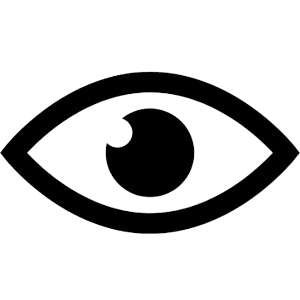
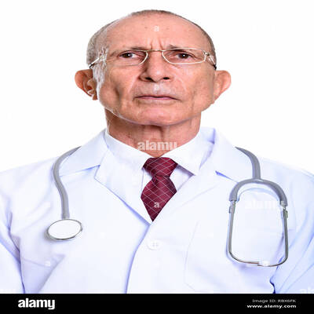

Somos HealthMedic, un instituto con más de 10 años de experiencia dedicados a la
formación y desarrollo de profesionales en el campo de la salud. Nuestro compromiso
radica en ofrecer programas de carreras cortas diseñados para capacitar a individuos
apasionados por el cuidado de la salud y el bienestar de las personas.
MISION
En HealthMedic, nuestra misión es proporcionar educación de calidad en
el campo de la salud, capacitando a individuos con las habilidades
y conocimientos necesarios para brindar un cuidado excepcional a
la comunidad.

VISION
Nuestra visión en HealthMedic es ser reconocidos como líderes en la
formación de profesionales de la salud, destacando por nuestra excelencia
académica, innovación educativa y compromiso con el crecimiento personal
y profesional de nuestros estudiantes.
OBJETIVOS
Nuestros objetivos en HealthMedic están centrados en el compromiso con la
excelencia académica y el desarrollo integral de nuestros estudiantes.
Nos esforzamos por proporcionar programas educativos actualizados y
relevantes que cumplan con las demandas y estándares del sector de la
salud
NUESTROS VALORES
En HealthMedic, nuestros valores fundamentales son la excelencia, la
integridad, el compromiso, la empatía y la colaboración. Estos valores
nos guían en todo lo que hacemos. Nos comprometemos a mantener los más
altos estándares de calidad en nuestra educación y servicios, actuamos
con honestidad, ética y transparencia en todas nuestras interacciones

Cesar Cardenas Espinoza
INYECTOTERAPIA
Administración de medicamentos mediante inyecciones, asegurando la
correcta aplicación y dosificación para el tratamiento efectivo de
diversas condiciones médicas.
Karelia Sanchez Espejo
PEDÍATRIA
Especialidad
médica dedicada al cuidado y tratamiento de los niños, desde el nacimiento
hasta la adolescencia, abordando aspectos de salud física, mental y
emocional.
Carlos Garcia Sauñe
CONDUCTOR
Profesional
encargado de conducir ambulancias de manera segura y eficiente, brindando
asistencia vital durante el traslado de pacientes a centros médicos.
Max Pachecho Huaman
HealthMedic es una institución excepcional
que brinda una educación de calidad en el campo de la salud. Gracias
a sus programas académicos sólidos y su enfoque práctico, me siento
preparada para enfrentar cualquier desafío en mi carrera como enfermera.
Dra. María Gómez
Mi experiencia en HealthMedic ha sido increíble.
Los profesores están altamente cualificados y se preocupan genuinamente por
el éxito de sus estudiantes. Además, las instalaciones modernas y el ambiente
colaborativo hacen que aprender sea una experiencia gratificante.
Dr. Carlos Ruiz
"HealthMedic no solo me ha brindado los conocimientos
necesarios para destacar en mi carrera como técnica en radiología, sino que
también me ha dado la confianza para enfrentar situaciones difíciles en el
ámbito laboral. Estoy agradecida por la formación integral que recibí en esta
institución..
Dra. Laura Martínez
HealthMedic ha sido mi segunda casa durante mis años de
formación como paramédico. La combinación de clases teóricas y prácticas me
ha permitido adquirir habilidades prácticas y conocimientos teóricos de manera
equilibrada. Recomiendo esta institución a todos los interesados en seguir
una carrera en el campo de la salud.